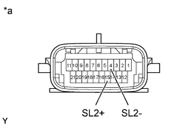
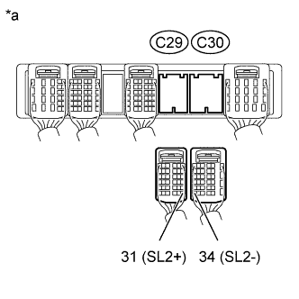
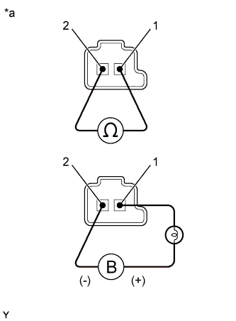

DTC P0778 Pressure Control Solenoid "B" Electrical (Shift Solenoid Valve SL2) |
| DTC Code | DTC Detection Condition | Trouble Area |
| P0778 | The ECM checks for an open or short in the shift solenoid valve SL2 circuit while driving and shifting gears (1-trip detection logic). Output signal duty equals 100%.
|
|
| ECM gear shift command | 1st | 2nd | 3rd | 4th | 5th | 6th |
| Shift solenoid valve SL2 | ON | ON | ON | ON | OFF | OFF |
| 1.INSPECT TRANSMISSION WIRE (SHIFT SOLENOID VALVE SL2) |
|  |
Disconnect the C24 transmission wire connector.
Measure the resistance according to the value(s) in the table below.
| Tester Connection | Condition | Specified Condition |
| 15 (SL2+) - 4 (SL2-) | 20°C (68°F) | 5.0 to 5.6 Ω |
| 15 (SL2+) - Body ground | Always | 10 kΩ or higher |
| 4 (SL2-) - Body ground | Always | 10 kΩ or higher |
| *a | Component without harness connected (Transmission Wire) |
|
| ||||
| OK | |
| 2.CHECK HARNESS AND CONNECTOR (TRANSMISSION WIRE - ECM) |
|  |
Disconnect the C29 and C30 ECM connectors.
Measure the resistance according to the value(s) in the table below.
| Tester Connection | Condition | Specified Condition |
| C29-31 (SL2+) - C30-34 (SL2-) | 20°C (68°F) | 5.0 to 5.6 Ω |
| C29-31 (SL2+) - Body ground | Always | 10 kΩ or higher |
| C30-34 (SL2-) - Body ground | Always | 10 kΩ or higher |
| *a | Front view of wire harness connector (to ECM) |
|
| ||||
| OK | ||
| ||
| 3.INSPECT SHIFT SOLENOID VALVE SL2 |
|  |
Remove shift solenoid valve SL2.
Measure the resistance according to the value(s) in the table below.
| Tester Connection | Condition | Specified Condition |
| 1 - 2 | 20°C (68°F) | 5.0 to 5.6 Ω |
Apply 12 V battery voltage to the shift solenoid valve and check that the valve moves and makes an operating noise.
| Measurement Condition | Specified Condition |
| Valve moves and makes an operating noise |
| *a | Component without harness connected (Shift Solenoid Valve SL2) |
|
| ||||
| OK | ||
| ||